|
CHANGING/MANIPULATING TEXTURES
|
This is a walk-through as to how to change and manipulate textures.
Before starting this tutorial you should first get acquainted with the basics of the "Tread3D" editor; the screen and the various commands that are available.
As in the "MAKING A BRUSH", "SAVING YOUR WORK", "HOLLOWING A BRUSH", or "GROUPING/UNGROUPING" tutorials start "Tread3D" and make a very basic hollowed brush (A room); or just open your saved file called "tutorial".
Your screen should look like the one below.
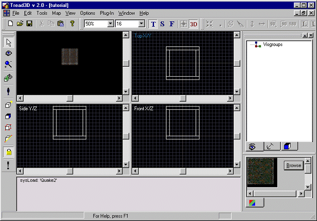
You will notice that what you have is a basic room with four walls, a ceiling and a floor.
Also, all the textures are the same.
Now, you can change the textures of an entire brush or just change the texture of a brush face.
First we will change the textures of an entire brush and then change the texture of a brush face.
Now, if you look at the "Texture Workspace" you will notice that the default texture was "e1u1/metal2_1" and therefore all your textures are this one.
The "Texture Workspace" looks like this.
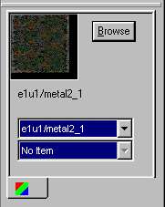
First lets search for a new texture to use.
We can click on the "Browse" button or use the "Upper Bar".
The "Browse" button looks like this.

The "Upper Bar" looks like this.

You will notice that the "Lower Bar" shows "No Item" and that is because you have only used one texture.
Lets click the "Browse" button and the "Texture Browser" now appears.
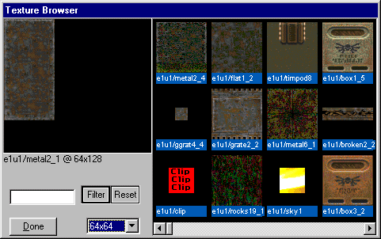
In the browser all textures are viewed at 64x64 and if you want to change the viewing size just go to the size "Drop Down" display and scroll to the size desired.
These are the sizes options available.
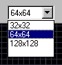
Lets change the view size to 128x128 because the wall in the room are approximately 128x128.
The "Texture Browser" window should now look like this.
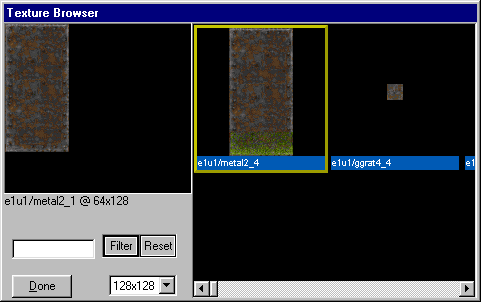
Lets pick a texture that is 128x128.
The texture chosen is "e1u1/metal6_1".
So, click on the texture in the browser.
The "Texture Browser" window should now look like this.
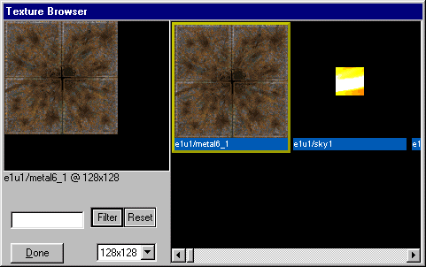
Now just click on the "Done" button.
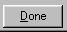
The "Texture Workspace" looks like this.
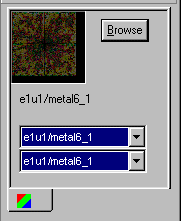
You will notice in the "Texture Workspace" that the new texture shows up in the "Texture Workspace Window" and the "Upper/Lower Bar".
If you activate the "Lower Bar" you will now see both the original texture and the new texture displayed.
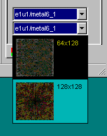
Now if you had used the "Upper Bar" you would have achieved the same result but this technique is not as versatile as using the 'Texture Browser".
A view of the "Upper Bar" when searching for textures is shown below.
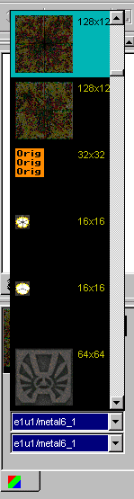
Now lets move the 3D camera inside the room.
Click on the "Camera" button and the camera comes into view.

Adjust the camera until your view is inside the room looking at the top wall in the TopX/Y view.
Your screen should look like the one below.
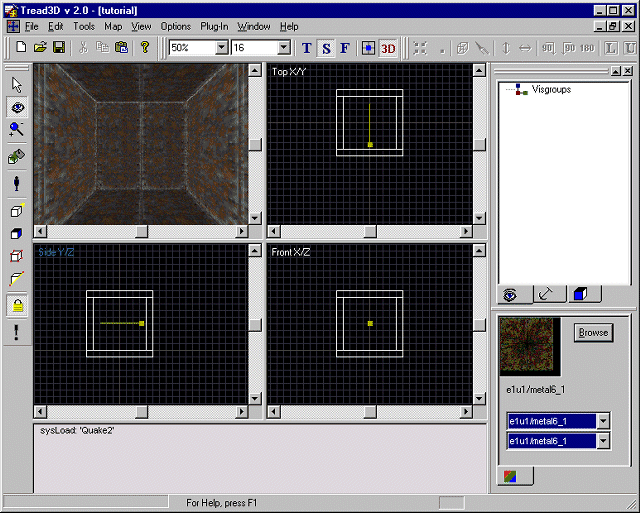
Click on the "Pointer" button.
Now point and click the wall you are facing in the 3D view.
The wall should now be highlighted.
Your screen should look like the one below.
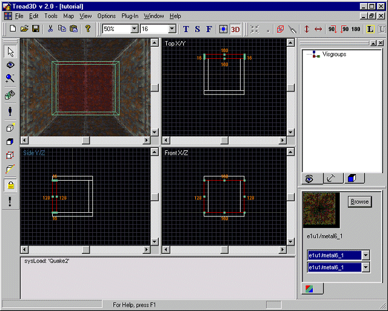
Now click on the "Paint Object" button.

Your screen should look like the one below.
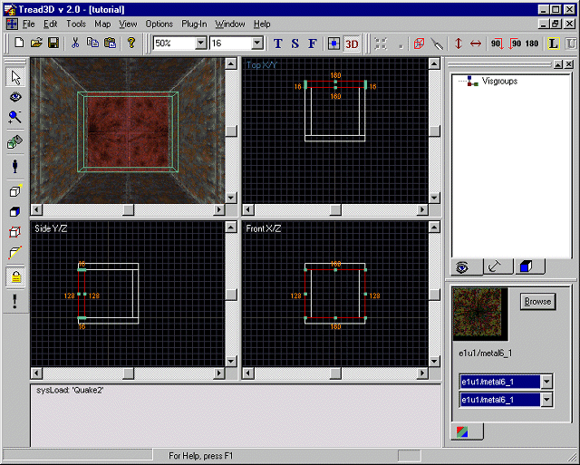
Now unselect the wall by clicking on the background in the TopX/Y view.
You will see that the texture has changed but it needs to be aligned.
Your 3D view screen should look like the one below.
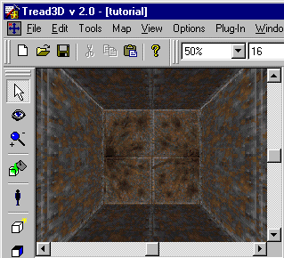
First, click on the wall in the 3D view to highlight it.
Second, click on the "Texture Lock" button to allow texture manipulation.
The "Texture Lock" button looks like this.

Now click on the "Face Properties" button.

You will see a new window appear.
The "Face Properties" window looks like this.
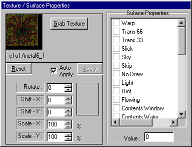
Adjust the "Shift-X" valu until the texture is aligned.
As you are adjusting the values you can see the texture actually move in the 3D view.
The "Face Properties" window now looks like this.
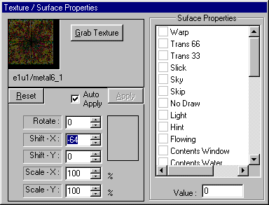
Now click on the "Pointer" button.
The "Face Properties" window now disappears.
Your screen should look like the one below.
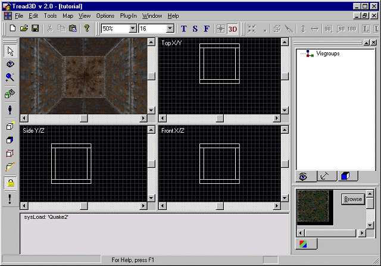
Thats all there is to it.
What you have done is changed the texture on all six sides of a brush and manipulated the texture on one face of a brush.
Now lets change the texture on only one face of a brush.
The only thing that is different from above is the order in which things are done.
Now lets move the 3D camera so it faces the bottom wall in the TopX/Y view.
Adjust the camera as you did above.
Your screen should look like the one below.
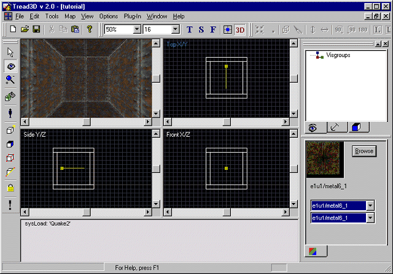
The first thing to do is click on the "Face Properties" button.
Now point at the wall in the 3D view.
Finally click on the "Paint Object" button.
Now as above adjust the texture alignment.
Your 3D view screen should look like the one below.
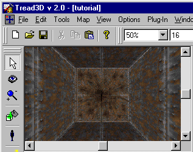
Thats all there is to it.
What you have done is changed the texture on only one face of a brush and manipulated the texture on it.
Now resave your work.